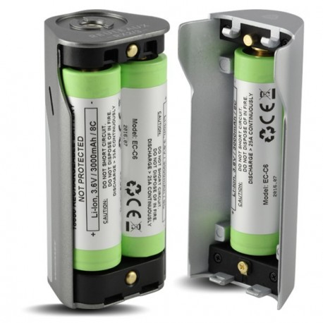

Mods
Un mod est tout simplement une batterie sur laquelle viendra s'insérer l'atomiseur. Il existe plusieurs types de mod avec différentes fonctionnalités telles que le contrôle de température qui nécessite un matériel particulier. Il faut également savoir que certains mods contiennent des accus d'autres non, la dernière catégorie a donc une batterie directement intégré, ce qui peut éventuellement poser problème de durée de vie, car si le mod possède des accus il suffit simplement de les changer.
Nouveau mod avec un système de remplissage intégré

Mod mécanique

Mod triple accus
Mod électronique